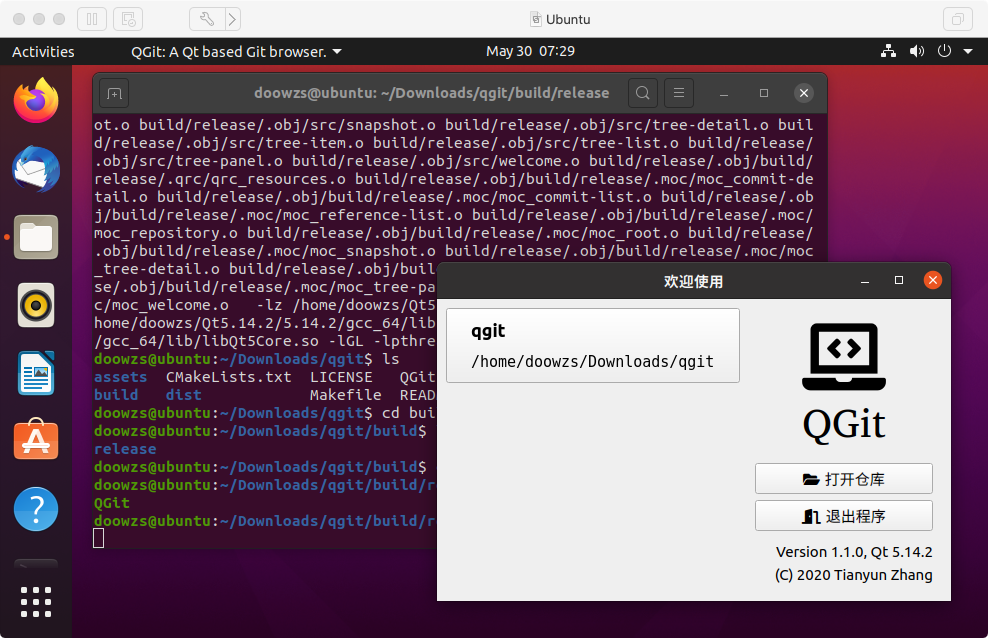
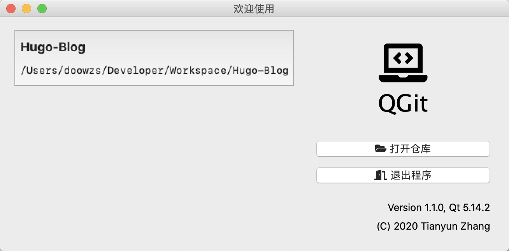
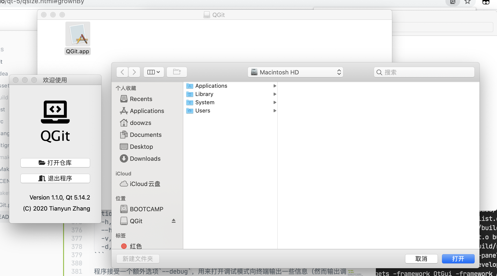
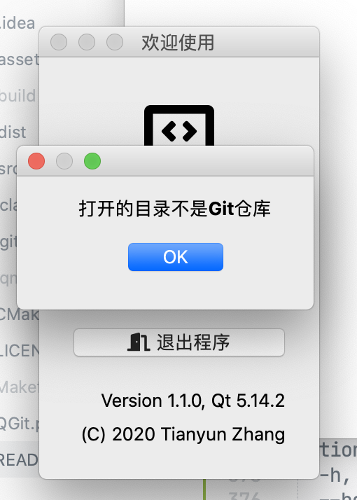
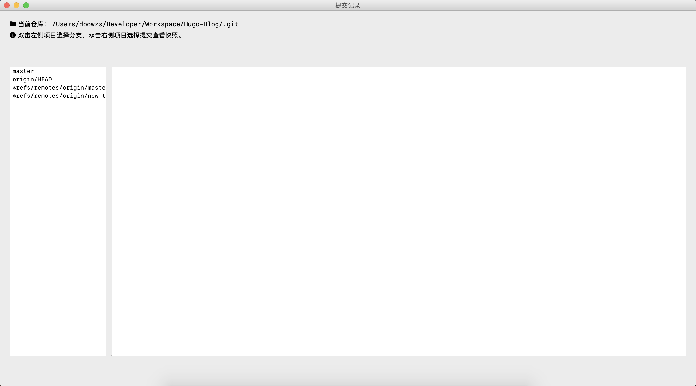
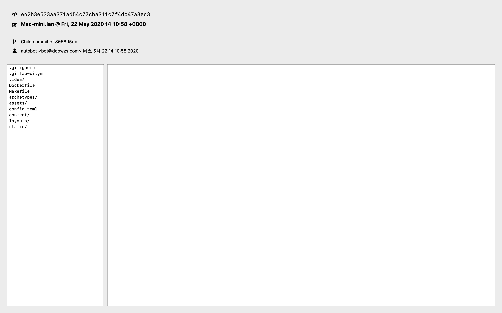
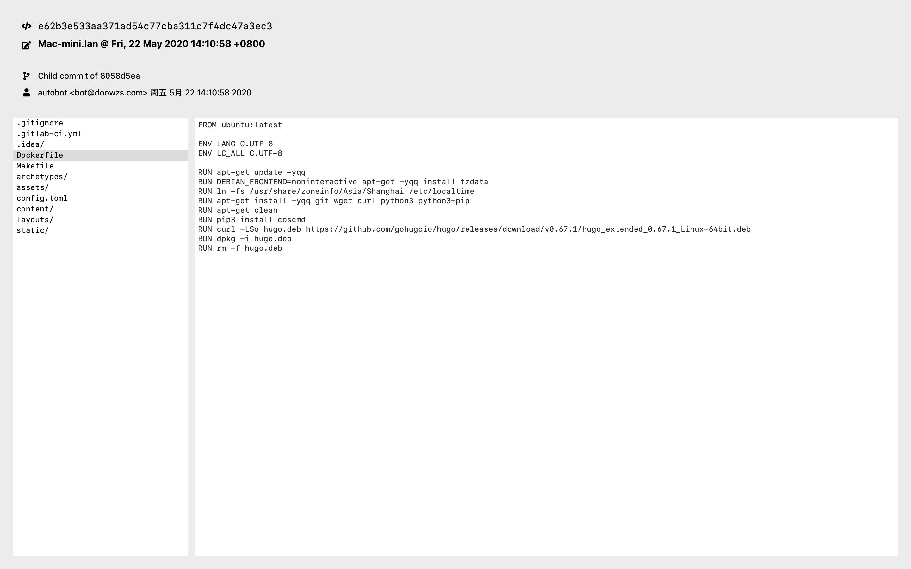
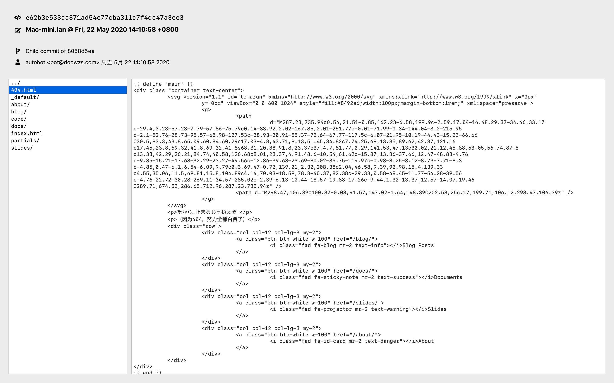
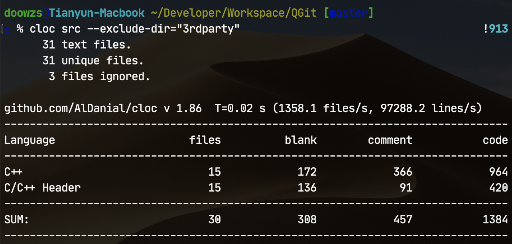

QGit - Git快照浏览器
2020年春季学期《高级程序设计》第三次课程设计
计算机科学与技术系 171860508 张天昀
一、主要内容
本次试验的主要内容为一个基于Qt实现的图形界面Git记录浏览器，可浏览Git仓库中的提交记录以及某个记录的文件系统快照。程序仅依赖于Qt5和zlib库，实现了以下功能：
- 读取Git仓库索引列表
- 解析某个分支/索引下的提交列表
- 解析提交时的文件系统快照，并展示文件
- 支持Git 1.6以后的packfile格式，不支持Git-LFS
本次课程设计中使用的第三方代码：
整个工程的代码目录结构如下：
QGit
├── CMakeLists.txt # CMake配置文件
├── LICENSE # GPLv3
├── QGit.pro # QMake配置文件
├── README.md # 此说明文档
├── assets # 文档使用的一些素材
├── dist # 预编译的可执行文件
│ ├── QGit-darwin-1.1.0-amd64.dmg # macOS App Bundle镜像文件
│ └── QGit-windows-1.1.0-amd64.zip # Windows二进制目录压缩包
└── src # 源代码目录
├── 3rdparty # 第三方代码
│ └── IconFontCppHeaders # 图标头文件
│ ├── IconsFontAwesome5.h
│ ├── IconsFontAwesome5Brands.h
│ └── licence.txt
├── resources # 资源目录
│ ├── 3rdparty
│ │ └── Font-Awesome # 图标字体文件
│ │ ├── fa-brands-400.ttf
│ │ ├── fa-regular-400.ttf
│ │ └── fa-solid-900.ttf
│ └── resources.qrc # Qt资源文件
├── headers # 头文件目录
│ ├── commit-detail.h
│ ├── commit-item.h
│ ├── commit-list.h
│ ├── constants.h # 全局常量
│ ├── gitfs.h
│ ├── reference-item.h
│ ├── reference-list.h
│ ├── repository.h
│ ├── root.h
│ ├── snapshot.h
│ ├── tree-detail.h
│ ├── tree-item.h
│ ├── tree-list.h
│ ├── tree-panel.h
│ └── welcome.h
├── commit-detail.cpp # 提交详细信息类
├── commit-item.cpp # 单个提交类
├── commit-list.cpp # 提交列表类
├── gitfs.cpp # Git文件系统类
├── main.cpp # 程序主入口
├── reference-item.cpp # 单个索引类
├── reference-list.cpp # 索引列表类
├── repository.cpp # Git仓库窗口类
├── root.cpp # 主窗口类
├── snapshot.cpp # Git快照窗口类
├── tree-detail.cpp # 文件详细类
├── tree-item.cpp # 单个结点类
├── tree-list.cpp # 结点列表类
├── tree-panel.cpp # 文件树面板类
└── welcome.cpp # 欢迎窗口类
二、Git文件系统简述
2.1 Git原理
Git在本质上就是一个文件快照系统。所有提交的文件通过zlib压缩后作为数据块，存储到一个将关键信息通过SHA-1算法运算得到的哈希值命名的文件当中去。
在提交的过程中，产生了三种基础类型的文件：
- 块文件（blob）：存储了文件压缩后的完整内容；
- 树文件（tree）：递归存储了一个目录中的所有文件的ID；
- 提交文件（commit）：存储了提交相关信息和树的根结点ID。
对于本项目而言，在Git目录中有两个不可或缺的文件夹：
-
refs文件夹中记录了所有索引指向的提交ID； -
objects文件夹中记录了所有提交到系统中的文件。
因此，只要打开的仓库目录完整地保存有以上两个文件夹，就可以通过文件夹中的内容恢复出所有的提交数据和快照，甚至不需要安装Git。
2.2 索引解析
索引解析是非常简单的工作。
refs
中的文件保存了索引指向的提交ID，直接读取文件即可。例如我们读取此项目
master
分支的提交索引：
$ cat ./.git/refs/heads/master
8a6a802e5a10aa3d285d2adf966b66b994a66d10
此时我们就得到了
master
分支的最后一次提交ID。
2.3 提交解析
找到提交的ID后，就可以在
objects
文件夹中找到对应的提交文件。SHA-1运算得到的哈希共有40位，所有文件根据前两位哈希值存放在不同的文件夹中，每个文件的名称为后续38位哈希值。
例如，根据刚才找到的提交ID，我们打开
8a/6a802e5a10aa3d285d2adf966b66b994a66d10
文件并解压缩（此处用了命令行工具
pigz
），查看其内容：
$ pigz -d < ./.git/objects/8a/6a802e5a10aa3d285d2adf966b66b994a66d10
commit 757tree f6e29c110b03a464a30931cb9ebb6618836fb85d
parent 4dd85d0d77034cedb4187fc22526bc496368f812
author Tianyun Zhang <doowzs@qq.com> 1590675630 +0800
committer Tianyun Zhang <doowzs@qq.com> 1590675630 +0800
gpgsig -----BEGIN PGP SIGNATURE-----
iQEzBAABCAAdFiEEEPbmd4zAARFgDVTtEcwV8RJXUnQFAl7PyK4ACgkQEcwV8RJX
UnRqOggAynb1XoEGUG5deoYvzus+ZkwaiD31WYeJSK2WbbknlpRe3mSGE7udb7sP
tb0MOzjmb8NAzoPupj1xuNTjpXXtzWEYjV3T2ZxDm4Bw8oxWNA0LGibSwSC5lTv2
nhoSlvEhgCj0E61wti2jMyvnvRCuSUCqMsvJX4EZrpIAdzbmXI2rdYKfhKuqzpgQ
QSrVppQXUero+psxXW43nQ99oJLHQf3IDM3unkNhlGlZ7f41tvJsFLJzU2iDmKb4
Ldlh3C+sSwjVKf/O0SPZNxq76IVzWpTtr8PXsdBd7Lhtnbt4PKj+cqBU38LGf4NQ
Vm42WDSmIILxJo6v8UTG8bgkpphZ4g==
=zvjJ
-----END PGP SIGNATURE-----
reopen root window after closing a repository
提交文件的第一行（以
\0
字符结尾）指出了这个文件是
commit
类型的文件、大小757字节，接下来每行的内容都对应了不同的信息，从这个提交中可以提取的关键的内容为：
-
树的根结点是
f6e29c110b03a464a30931cb9ebb6618836fb85d -
此次提交只有
4dd85d0d77034cedb4187fc22526bc496368f812一个父结点 -
提交作者是
Tianyun Zhang <doowzs@qq.com> -
提交时间是
1590675630 +0800（UNIX时间戳） -
提交的标题是
reopen root window after closing a repository
通过宽度或深度优先搜索，我们可以找到整条提交树中的所有提交项目。
2.4 文件解析
Git文件树就是一颗存储在文件中的多叉树，每一层都保存了多个指向其他文件的指针，可以利用递归的方式解析不同层上的内容。
回到刚才的例子，我们找到了树的根结点，此时就可以通过相同的方式读取根结点的文件内容：
$ pigz -d < ./.git/objects/f6/e29c110b03a464a30931cb9ebb6618836fb85d
tree 183100644 .clang-formatȧ?U?:??3E?1Y?TVl?e100644 .gitignore?1i??Χo?N?(T??T?40000 .ideam??,??
5u???i???\?100644 CMakeLists.txtI ?dsO?$g?Y:=r⇯(40000 src?o??ҳ?9S???Z0???W?%

文件的第一行指出这是
tree
类型的对象，并且大小为183字节。但这个文件不再按行分割，而是使用了更加紧凑的数据结构。树上结点的每个指针由三部分构成：
-
mode（蓝色部分）：文件类型，Git中共有四种合法的文件类型： -
040000：tree结点 -
100644：普通文件 -
100755：可执行文件 -
120000：符号链接 -
name（红色部分）：一个空格后跟随字符串表示文件的名称，以\0为结尾。 -
hash（绿色部分）：长度为40的哈希值，指向存储该对象的文件。
上面图片中的矩形区域即为一条记录，指向一个叫做
.gitignore
的普通文件，它的哈希值为
cf311769
。
获得文件的哈希之后，我们就可以以同样的方法获取在提交时快照的文件内容了。
$ pigz -d < .git/objects/cf/3117699feacea76fa34eed182854f8a0547fa7
blob 3356# Created by https://www.gitignore.io/api/qt,c++,code,macos,clion
# Edit at https://www.gitignore.io/?templates=qt,c++,code,macos,clion
### C++ ###
# Prerequisites
*.d
（后续内容省略）
2.5 packfile
当运行
git gc
指令，或者从远程仓库获取文件时，所有的文件会被打包，作为一个文件进行传输并存储，此时需要从打包后的文件中获取对应的数据。
索引文件会被存储到
packed-refs
文件中，一行一个哈希值与索引名称，此处不详细介绍了。
对象文件会被打包到packfile中，此处结合 GitBook （GPLv3授权）的图片做一下简单说明：
存储对象的packfile共分为索引和数据两个文件，本项目仅实现了Git 1.6版本以后支持的packfile，即下图中右侧的索引文件版本。

- 文件头8字节存放魔数
-
fanout：256个int类型的数组成的区域，表示对应开头的哈希值共有多少个（fanout[0]表示00，fanout[1]表示01……） -
sha1：每20个字节存储一个哈希值 -
crc：每4个字节存储CRC校验码 -
offset：每4个字节存储数据文件中对应的偏移量 -
64b_offset：此部分与LFS有关，用于存储大于2GiB的文件，项目中没有实现 - 最后存放packfile的校验码
索引文件的存放方式决定了二分查找的读取方法：找到总项目数，然后在
sha1[0]
到
sha1[size]
之间进行二分查找所需要的哈希值，然后在
offset
数据表中直接读取出偏移量即可。

存放数据的packfile的格式为：
- 8字节的魔数、4字节表示对象数量
- 接下来每个对象采用变长方式存储：
- 第一个字节存储类型和4比特长度值
-
然后每个字节存储7比特长度值，直到最高位为
0 - 变长部分结束后存储文件内容
也就是说，读取packfile时，首先要根据在索引文件中的偏移量找到起始位置，然后读入第一字节判断对象类型，再读入变长的长度信息并计算长度，最后根据长度读入后续的数据。
2.6 OFS_DELTA与REF_DELTA对象
为了节省空间，在打包文件时会创建差分对象，由一个基础对象
base
和一系列差分指令
delta
组成。
-
OFS_DELTA对象的base存放在同一个文件中，当前对象偏移量减去offset的位置； -
REF_DELTA对象的base为变长长度之后的20字节表示的哈希值对应的对象。
差分指令共有两种：
-
最高位为
1为copy指令：从base中复制一部分到目标位置； -
最高位为
0为insert指令：从delta的后续中读取数据并插入到目标位置。
差分的文件形式较为复杂，且文档中几乎没有什么介绍，所以项目实现时参考了Git的源代码和一个Node写的Git客户端 "node-git-core" 的代码。
三、程序设计
3.1 类关系图
namespace QGit
Root
/ \
Welcome Repository -- GitFS
/ \
-----+- Snapshot
/ \ / \
Ref Commit Commit Tree
List List Detail Panel
3.2 主窗口类
QGit::Root
QGit::Root
类继承了
QMainWindow
类，是程序的主窗口。在
main
函数中，程序会先加在资源文件中的字体，然后解析命令行参数（主要是初始化调试变量），之后创建一个主窗口对象，进入消息循环。
主窗口类创建后，如果已经在命令行中指定了目标目录，那么就会直接创建仓库窗口对象并读取Git仓库中的文件；否则则会创建一个欢迎窗口对象，并展示欢迎信息。
主窗口类有两个槽函数：
-
openRepository与欢迎窗口类的repositorySelected信号绑定。当用户选择了一个Git仓库目录时，打开对应的仓库并创建仓库窗口对象。 -
closeRepository与仓库窗口类的repositoryClosed信号绑定。当用户关闭了仓库窗口时，此函数被调用，删除仓库窗口对象并重新打开欢迎界面。
3.3 欢迎窗口类
QGit::Welcome
欢迎窗口的界面仿造了Intellij IDEA等IDE的设计，主要分为两部分：
-
最近文件控件
recentWidget -
菜单控件
menuWidget
创建欢迎窗口对象之前，主窗口类会读取存储在
recent.json
中保存的JSON格式的数据，其中保存了一个最近打开文件目录的字符串数组。主窗口类会把这个JSON数据转换为
QStringList
对象，并传入欢迎窗口的构造函数。在欢迎窗口中，如果最近打开的文件不为空，则会创建一个可滚动的列表
recentScrollArea
来展示这些数据。
窗口对象的另一部分则是固定的内容：图标、应用程序标题、两个按钮和应用程序信息。两个按钮分别负责打开仓库和退出程序，应用程序信息则是从静态类
QGit::Constants
获取信息并展示。
欢迎窗口类有两个槽函数：
-
selectRepository与打开仓库的按钮相连。当按钮按下时，调用QFileDialog的静态方式展示一个选择文件的对话框，通过对话框来让用户打开Git仓库目录。当用户成功选择一个目录时，会释放repositorySelected信号。 -
closeApplication与关闭程序的按钮相连。当按钮按下时，此槽函数会销毁主窗口。当Qt程序的所有窗口都不可见时程序会自动退出，由此实现了关闭程序的效果。
3.4 仓库窗口类
QGit::Repository
仓库窗口类的界面设计分为三部分：
- 上方显示仓库目录和使用说明；
-
左侧为
QGit::Reference::List对象，显示当前仓库的分支/索引列表； -
右侧为
QGit::Commit::Item对象，显示当前分支/索引中的提交列表。
当创建仓库窗口对象时，会首先创建一个
QGit::FS
文件系统类对象（具体见3.6节），作为文件读取解析的中间层使用（避免在对应的类中写繁琐的文件读写函数）。然后调用文件系统对象读取所有的分支/索引，创建成
QGit::Reference::Item
对象并添加到列表显示中。当用户双击某个索引对象时，会触发一个Lambda表达式构成的槽函数，进一步调用提交列表控件去加载所有的提交信息。
当提交列表的槽函数
loadCommits
被调用时，会先删除当前列表中已经加载的信息，然后使用宽度优先搜索（BFS）算法来加载所有的提交信息：
- 槽函数接受一个字符串类型的参数作为索引指向的提交ID；
-
算法有一个
QStringList类型对象作为等待访问的提交“队列”，初始时只包含索引指向的提交； - 每次从队列中取出一个提交ID
-
调用文件系统类对象获取提交的内容并解析，创建一个
QGit::Commit::Item类对象。 - 然后将这个成员的父节点加入到队列中去（一般情况下一个commit只有一个parent，而首次的commit或孤儿节点没有parent，merge commit有多个parent）；
-
当未访问的提交列表为空时，BFS算法结束，将所有提交按照提交时间（
QDateTime类数据成员）排序，添加到提交列表控件中去。
当用户双击某个提交对象时，会触发一个Lambda表达式构成的槽函数，释放
commitSelected
信号，显示仓库窗口并进一步调用快照窗口的
commitSelected
的槽函数，来读取并展示这个提交的详细信息。
仓库窗口类还重载了
QWidget
类的
closeEvent
函数，来捕获窗口关闭事件。当用户点击关闭窗口按钮时，这个重载函数会被调用并忽略窗口关闭事件，同时发出
repositoryClosed
信号，通知主窗口类销毁仓库窗口并重新打开欢迎界面。
3.5 快照窗口类
QGit::Snapshot
快照窗口类的界面设计分为上下两部分：
-
上方为
QGit::Commit::Detail对象，显示提交的详细信息，如哈希ID、标题、内容、提交作者和时间等； -
下方为
QGit::Tree::Panel对象： -
左侧为
QGit::Tree::List对象，显示当前文件树结点的文件列表； -
右侧为
QGit::Tree::Detail对象，显示当前打开文件的内容。
快照窗口使用了
QVector
作为栈，来实现文件管理器一般的浏览体验。
- 当栈为空时，代表用户当前在根目录处。
- 每当用户双击一个文件名称：
-
如果该文件是子树，那么就把当前结点加入到栈中并调用
loadCurrentTree方法加载该层的数据； -
如果该文件不是子树，那么就释放
objectSelected信号，通知快照窗口类调用Detail::loadBlobContent方法，将文件内容加载到右侧的文本编辑框中。 -
当用户不在根目录时，列表首部有一个
../项目，双击则从栈中弹出上一层目录并重新加载数据。
正如2.4节中所说，Git中除了tree以外有三种文件类型，此处仅仅展示
100644
类型即普通文件。当用户双击
100755
或
120000
类型文件项目时，将只显示该文件的类型而不展示内容。
3.6 文件系统类
QGit::FS
本类主要实现第二节中所描述的Git文件系统读取和解析操作。
FS
类对外共有两个接口：
-
getObject：返回QByteArray类型的原始数据； -
getStream：返回QTextStream类型的数据流。
在调用时，两个接口都只接受一个
hash
参数，表示需要读取的文件哈希名称；而两个函数返回的类型不同，适用于需要随机访问（原始数据）或顺序访问（数据流）不同的情况。
在内部实现中，共有以下成员函数：
-
readDataFromObjectFile：从单个文件中读取数据； -
readDataFromPackFiles：从packfile中读取数据； -
readOffsetFromPackIndexFile：从索引文件中，用二分查找算法找到偏移量； -
readDataFromPackDataFile：根据偏移量，从数据文件中读取数据； -
convertBytesToLength：将变长的长度数据转换为数值； -
inflateCompressedData：将读取的数据用zlib解压缩； -
patchDeltifiedData：解析delta指令，恢复差分表示的数据。
四、程序运行
4.1 编译方式
本项目供配置了两个工具：CMake和QMake。
如果机器上安装了Qt，可以通过设置
Qt5_DIR
环境变量，然后用CMake进行编译。例如：
$ export | grep Qt5_DIR
Qt5_DIR=~/Developer/Qt/5.14.2/clang_64/lib/cmake/Qt5
$ mkdir build && cd build
$ cmake ../ && make
$ ./qgit
也可以将Qt的可执行文件目录加入到
PATH
环境变量中，然后用QMake进行编译。CMake配置中没有设置版本号，只有用QMake编译才会注入配置文件中的版本号。
$ export PATH=~/Developer/Qt/5.14.2/clang_64/bin:$PATH
$ qmake && make
$ cd ./build/release # 不同平台编译的目标文件执行方式不同
Release版本不会链接Qt的动态库，可以使用
windeployqt
、
macdeployqt
等工具将程序运行所需的文件复制到目标文件夹中来准备运行环境；Linux环境下我使用
cqtdeploy
打包程序。不同平台的运行方式如下：
-
Windows：解压缩，然后运行
QGit.exe； -
Linux：解压缩，然后运行
QGit.sh； -
macOS：打开磁盘镜像文件，然后运行
QGit.app。
下图为Ubuntu 20.04 LTS运行截图：

4.2 命令行参数
在命令行中运行程序时，可以用
--help
选项来打印帮助信息：
$ ./QGit --help
Usage: ./QGit [options]
QGit: A Qt based Git browser.
Options:
-h, --help Displays help on commandline options.
--help-all Displays help including Qt specific options.
-v, --version Displays version information.
-d, --debug Turn on debug mode
程序接受一个额外选项
--debug
，用来打开调试模式向终端输出一些信息（然而输出调试完之后都被删光了，所以基本没什么内容）。
4.3 主窗口/欢迎窗口
下面以macOS版本的程序为例展示程序的内容。当程序打开时首先展示欢迎页面，用户可以点击“打开仓库”按钮选择目录，或者点击“退出程序”按钮关闭程序。
如果用户此前已经打开过一些仓库，程序会读取相关记录并在左侧展示仓库目录列表：

当用户点击目录项目时即可打开对应的仓库。如果没有相关记录，点击“打开仓库”后即弹出对话框选择目录。此处用户可以选择仓库根目录，或者选择仓库中的
.git
文件夹，也可以选择bare仓库（通过
git clone --bare
获得）：

此时用户可以选择一个文件夹作为仓库目录打开。如果选择的文件夹不包含Git仓库对应的必须文件，则程序弹出对话框提示错误：

4.4 仓库窗口
用户成功打开一个仓库目录后，就会显示仓库窗口：

仓库窗口的左侧显示了Git仓库的分支/索引列表，右侧展示提交列表。一开始时提交列表为空，用户双击左侧的某个分支后，程序就会加载对应的提交内容并且展示在右侧。

4.5 快照窗口
当用户在仓库窗口中双击某个提交项目时，就会显示快照窗口：

快照窗口的上方显示了提交的详细信息，左侧为文件目录，右侧展示文件内容，一开始为空。用户可以双击左侧展示的文件项目来查看快照中文件的内容，并对其中的文本进行复制：

如果项目名称最后为
/
，则代表项目对应一个文件夹，用户可以双击进入该文件夹：

当用户不在快照的根目录时，文件列表顶部会出现
../
一项，用户双击即可返回到上一层目录中。
五、实验中遇到的问题和感想
5.1 遇到的问题与解决方案
- 多窗口之间的切换效果（按下按钮后关闭这个窗口再打开另一个等效果）
解决方案：通过聚合实现多个子窗口和主窗口的关系，交给
QMainWindow
处理信号之后调整各个窗口的状态。同时保证Qt程序中至少有一个窗口可见，否则窗口全部隐藏则程序自动退出。
- 删除对象的时候出现运行错误
解决方案：Qt中的对象（QWidget）等的生命周期是与
parent
绑定的，当
parent
消亡时，所有绑定的子对象都会被销毁。因此Qt程序中无需手动的去
delete
已经被绑定的对象，不会造成内存泄漏。同时为了防止销毁后处理信号时遇到异常，需要调用Qt的
deleteLater
函数来销毁对象而不是调用
delete
运算符。
- CMake编译出来的程序无法打包
解决方案：虽然CMake搭配CLion用起来很爽，但是最后只好改用QMake编译并用Qt的打包工具打包程序（真香）。
- QMake不支持多个文件夹下的同名文件
解决方案：经过搜索，这是Qt编译工具2018年就已经被反馈的bug（
QTBUG-70874
）：生成MOC文件没有遵守
object_parallel_to_source
选项的语义把文件放到不同的文件夹中。然而这个问题到现在还没有被修复，使用QMake的子项目方式过于繁琐，所以解决方案只有修改文件名这一种方式了。
5.2 实验感想/总结

通过灌入版权说明等一大堆没用的注释，注释代码比达到了惊人的33%！（战术后仰）
-
本次课程设计中
Item、List等重复类名多次出现，利用了C++的namespace机制解决了相关问题，源代码放在不同文件夹中相当完美。无奈Qt的MOC处理程序过于弱智，努力全都白费了，只能乖乖地把目录扁平化，用不同的名称命名源代码文件。 - GUI程序开发过程中除了写程序需要适应消息处理（Qt中的信号/槽函数）的运行逻辑，还需要了解处理布局、样式的设计开发，综合起来难度很大。
- Qt提供的各种库STL兼容性好、支持跨平台，极大的简化了开发流程；但Qt的一堆宏定义、独特的编译工具也导致与传统C++程序、IDE、调试器兼容性不佳。
-
Qt控件（如
QLabel等）支持富文本，所以绘制控件样式可以用HTML代替，相对降低了一点的难度。 - Qt程序运行需要附带动态链接库，打包也是一大难点。感谢吕云哲同学帮我测试运行Windows程序、郑奘巍同学帮我测试运行macOS程序。